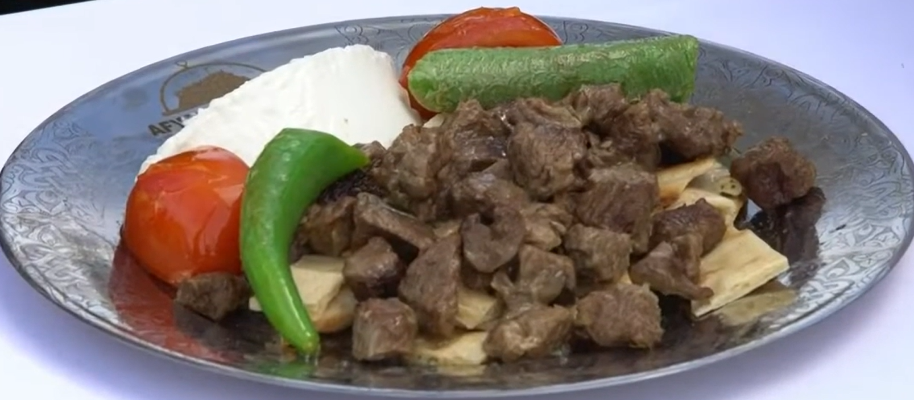

Şefini Seç ve Maceraya Başla!

Ali Şef
Hazırlık Aşaması
lock

Ayşe Şef
ALİ'Yİ BİTİR
lock

Ahmet Şef
AYŞE'Yİ BİTİR
Yumurta: 0
Can: ❤️❤️❤️
Süre: 30
Can: ❤️❤️❤️
Kat: 0/5
EKMEK KADAYIFI
Ayşe Şef Anlatıyor
Kıymetli şef adayı, hoş geldin! Afyonkarahisar, eşsiz yemek kültürü ve tarihini koruma başarısıyla 2019 yılında UNESCO tarafından Gastronomi Şehri ilan edilmiştir.
Gastronomi kelimesi, kültür ve yemek arasındaki ilişkiyi, iyi yemek yeme sanatını ifade eder. Afyon mutfağı, haşhaşlı hamur işlerinden sucuklara kadar eşsiz tatlar sunar. Her sofra ayrı bir ziyafettir!
Lezzet Turu
Afyon Lezzetlerini Eşleştir
Eşleşen: 0/12
Ahmet Şef'in Mutfağı
Şimdi Ahmet Şef ile birlikte meşhur Afyon Kebabı tarifini adım adım hazırlayacağız. Hazır mısın?
Aşamaları Sırala

Buraya Sırayla Gelecekler
TEBRİKLER ŞEF!
Sevgili şefim, anavatanının bu eşsiz lezzetlerini öğrenmen bizi çok mutlu etti. Türk mutfağının zenginliği ve kültürel mirasımız senin sayende dünyanın her yerine taşınacak. Bir sonraki şehrimizde yepyeni lezzetler keşfetmek üzere seni her zaman mutfağımıza bekliyoruz!
🏆 🥇 🌟